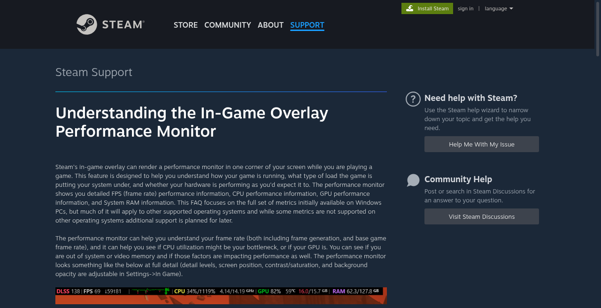

Last checked 14 Sep 2026 · Steam Early Access. Guides may change after patches.
How to Show FPS in WARDOGS (Counter Options in EA)
TL;DR: This page answers how to show / see FPS in WARDOGS Steam Early Access — Steam overlay (classic FPS counter and newer Overlay Performance Monitor), NVIDIA / AMD vendor overlays, and whether an in-game WARDOGS FPS option exists (not confirmed in public settings guides as of 2026-09-21). No invented FPS%. After the counter is visible, improve frames via Best Settings and hitch triage via Stuttering / Low FPS — this page is not a full settings guide. Overlay fights binds / Elytra / crash → Controls · Crashing.
Last checked 2026-09-21 (Early Access).

What this page covers (and refuses to invent)
| Covered | Not invented |
|---|---|
| How to show FPS (Steam / NVIDIA / AMD paths) | Any “+X% FPS” or fabricated 1% lows |
| Overlay conflict checklist (binds / crash / hitch) | Claiming an in-game FPS toggle exists without screenshot |
| When to leave this page for Settings / Stutter | Hardware FPS leaderboards |
| Frame Generation vs “true” FPS note | Official Bulkhead FPS counter docs |
Platform fact: PC Windows Steam EA; store anti-cheat tag Elytra (editorial 2026-09-13). Overlays that fight Elytra belong on Crash / WD-L014 — not “force overlay for FPS.”
Decision tree: which counter first?
Need to see FPS in WARDOGS?
│
├─ Prefer one overlay only (fewest hooks)
│ └─ Steam first (game is Steam-native)
│ ├─ Classic: Settings → In-Game → In-game FPS counter → corner
│ └─ Newer: Overlay Performance Monitor / Performance Overlay
│ (Steam FAQ + press — labels on your client)
│
├─ Already use NVIDIA App / GeForce Experience?
│ └─ NVIDIA Statistics / FPS HUD (Alt+Z → Statistics; Alt+R toggle lead)
│ Labels — App vs older GFE differ
│
├─ Already use AMD Software: Adrenalin Edition?
│ └─ Performance → Metrics → Show Metrics Overlay + Frame Rate / FPS
│ Toggle lead: Ctrl+Shift+O (AMD FAQ family) — hotkey
│
├─ Counter missing / blank / causes hitch or crash?
│ ├─ Overlay conflict → disable extras one at a time
│ ├─ Process exits / black screen./wardogs-crashing/./wardogs-black-screen/
│ └─ Elytra / WD-L014 launch fail → do not stack more overlays
│
└─ Counter works — want higher / smoother FPS? ├─ Steady low./wardogs-best-settings/ └─ Hitch / uneven./wardogs-stuttering-fps/In-game WARDOGS FPS option
Public Sep 2026 settings guides (Hone, games.gg, showgamer-class) document Frame Limit / Frame Rate Limit, Main Menu FPS Limit, upscaling, and Frame Generation — they do not document a dedicated in-game FPS counter toggle.
| Claim | Status | What to do |
|---|---|---|
| “Main Menu FPS Limit” | Third-party settings lead (caps menu FPS) | Not a counter — do not confuse with Show FPS |
Rule: Until a live-client screenshot proves an in-game Show FPS row, treat Steam (or one vendor overlay) as the answer for wardogs fps counter / how to show fps in wardogs.
Steam overlay FPS (primary path)
Steam ships the counter through the Steam Overlay. If the overlay is off globally or for WARDOGS, no FPS number appears.
A) Classic In-game FPS counter (HowToGeek / long-standing Steam UI)
| Step | Action | Note |
|---|---|---|
| 1 | Steam → Settings → In-Game | Mac: Steam → Preferences |
| 2 | Enable Enable the Steam Overlay while in-game | Required |
| 3 | In-game FPS counter → Top-left / Top-right / Bottom-left / Bottom-right | Not Off |
| 4 | Optional: High contrast color | Brighter digits |
| 5 | Launch WARDOGS from Steam | Alt-Tab changes may need a full relaunch |
B) Overlay Performance Monitor (newer Steam UI — labels)
Valve’s public FAQ and 2025–2026 press describe a richer Overlay Performance Monitor / performance overlay under In-Game (sometimes described near Performance Overlay wording). Clients differ — match what you see.
| Step | Action | Note |
|---|---|---|
| 1 | Steam → Settings → In-Game | Restart Steam if options missing (press lead) |
| 3 | Set to Show / enable; pick screen position | — |
| 4 | Optional: detail level, text scale, opacity | Extra graphs ≠ more FPS |
| 5 | Launch WARDOGS; confirm digits appear | Frame Gen may show dual FPS lines (Steam press lead) |
WARDOGS-specific Steam checks
| Check | Where | If fail |
|---|---|---|
| Overlay on for this game | Library → WARDOGS → Properties → enable Steam Overlay | Counter never appears |
| Overlay hotkey | Default Shift+Tab | Confirm overlay opens at all |
| Multiple OSDs | Steam + NVIDIA + AMD + Discord + RTSS | Keep one FPS source |
NVIDIA overlay FPS
NVIDIA documents an in-game Statistics / performance overlay via NVIDIA App (successor path) and older GeForce Experience. Menu names move between versions — mark.
| Path | Steps (public lead) | Toggle lead |
|---|---|---|
| NVIDIA App | Settings → enable In-Game Overlay / NVIDIA Overlay → in-game Alt+Z → Statistics → configure HUD / enable FPS metrics | Alt+R toggle (NVIDIA help) |
Rules:
- Prefer FPS-only metrics if the full HUD hitchs (see Stutter page).
- Do not claim NVIDIA overlay “adds FPS.”
- If WARDOGS won’t launch with NVIDIA overlay + Elytra, disable overlay and use Crash / WD-L014 — not this page.
AMD overlay FPS
AMD Software: Adrenalin Edition exposes Performance → Metrics with a Show Metrics Overlay (AMD FAQ DH3-038 family). Tracked metrics include Frame Rate / FPS.
| Step | Action | Note |
|---|---|---|
| 1 | Open AMD Software: Adrenalin Edition | — |
| 2 | Performance → Metrics | Layout can vary by driver |
| 3 | Enable Show Metrics Overlay / Metrics Overlay | Separate from merely opening Radeon Overlay |
| 5 | In-match toggle lead: Ctrl+Shift+O | Confirm under Settings → Hotkeys |
Older “Radeon Overlay” docs also mention Alt+R for the overlay menu and metrics location picks — treat hotkeys as against your Adrenalin build.
Overlay conflict table (FPS visible vs playable)
| Symptom | Likely fork | Next page |
|---|---|---|
| No FPS number, overlay won’t open | Overlay disabled / wrong game Properties | Stay here — Steam checklist |
| FPS shows; game hitchs more | Extra OSD / recording hook | Stuttering — one overlay |
| FPS shows; binds / chat / Shift+Tab fight | Hotkey clash | Controls |
| Overlay on → crash / black / won’t launch | Elytra / hook conflict | Crashing · Black Screen · WD-L014 |
| FPS fine; still “laggy” online | Net / servers — not graphics | Is Down · Servers |
| Counter high; fights feel uneven | Hitch / 1% feel — not average FPS | Stuttering |
Isolation order (safe → invasive)
- Steam FPS only (vendor overlays off).
- If Steam blank → NVIDIA or AMD alone (not both).
- Disable Discord / Xbox Game Bar / RTSS / Afterburner / recording overlays one by one.
- If process dies → leave this page.
- Never “repair Windows Defender” for a counter.
After you can see FPS (this page ≠ settings)
| Goal | Do this | Do not |
|---|---|---|
| Raise steady FPS | Best Settings — Maximum FPS path | Copy “+40% FPS” blogs |
| Fix hitch / traversal spikes | Stuttering / Low FPS | Spam Ultra→Low before overlay/cache triage |
| Competitive clarity | Settings → Clarity path (blur/DoF/bloom off leads) | Chase overlay digits only |
| Cap vs unlimited | Test both; document feel | Invent which is “best for all PCs” |
| Frame Generation | Note displayed vs base FPS if dual counters | Treat generated FPS as simulation proof |
Honest line: A visible counter measures; it does not optimize. Slider goals live on Settings; hitch forks live on Stutter.
Quick checklist
- [ ] Steam Overlay enabled globally and on WARDOGS Properties
- [ ] Classic FPS corner or Performance Monitor showing digits
- [ ] Only one primary FPS OSD active
- [ ] Photographed any in-game Show FPS row if found
- [ ] If hitching with OSD → Stutter page; if exiting → Crash / Black Screen
- [ ] Ready to tune → Best Settings (no % claims)
FAQ
Q: How do I show FPS in WARDOGS?
A: Enable Steam Overlay, then set In-game FPS counter to a screen corner (Steam → Settings → In-Game), or enable Steam’s newer Overlay Performance Monitor if present. Launch from Steam. In-game Show FPS is unverified.
Q: Does WARDOGS have a built-in FPS counter?
A: Not confirmed in public Sep 2026 settings guides. Main Menu FPS Limit is a cap, not a counter. Prove with a Settings screenshot before publishing “in-game option.”
Q: How do I enable the Steam FPS counter?
A: Steam → Settings → In-Game → In-game FPS counter → choose a corner; keep Overlay enabled. Relaunch the game after changes.
Q: NVIDIA FPS overlay — where is it?
A: NVIDIA App / GeForce Experience → enable In-Game Overlay → Alt+Z → Statistics / HUD FPS → Alt+R toggle lead. Exact labels by app version.
Q: AMD FPS overlay — where is it?
A: Adrenalin → Performance → Metrics → Show Metrics Overlay + Frame Rate/FPS; in-game toggle lead Ctrl+Shift+O. Hotkeys.
Q: My FPS counter causes stutter or crash in WARDOGS.
A: Run one OSD only. Hitch → Stuttering. Crash / black / Elytra → Crashing / Black Screen.
Q: I can see FPS — how do I raise it?
A: This page stops at visibility. Use Best Settings and Stuttering. No invented FPS%.
Q: Does Elytra block FPS counters?
A: Store tags Elytra for anti-cheat. Overlay + AC conflicts usually present as launch/crash — not “FPS locked.” Fix launch first; then re-enable one counter.
Also read / Related
- Best Settings (FPS vs Clarity) — after the counter works
- Stuttering or Low FPS — hitch vs steady low
- Controls / HOTAS — overlay / bind conflicts
- Crashing / Won’t Launch (Elytra) — process exits
- Black Screen on Launch — never reaches menu
- Steam Launch Options — startup lab, not FPS%
- WD-L014 Unable to Launch — Elytra repair path
Sources
- Steam Support — Understanding the In-Game Overlay Performance Monitor — https://help.steampowered.com/en/faqs/view/3462-CD4C-36BD-5767
- HowToGeek — Display Steam’s built-in FPS counter — https://www.howtogeek.com/706145/how-to-display-steams-built-in-fps-counter-in-pc-games/
- Tom’s Hardware — Steam Overlay Performance Monitor (FPS / frame gen) — https://www.tomshardware.com/pc-components/gpus/how-to-use-steams-in-game-performance-monitor-to-display-real-fps-with-dlss-or-fsr-frame-generation-active
- NVIDIA — In-Game Performance and Latency Overlay (App / GFE family) — https://nvidia.custhelp.com/app/answers/detail/a_id/5084
- AMD — Monitor Performance Metrics (Adrenalin / Show Metrics Overlay) — https://www.amd.com/en/resources/support-articles/faqs/DH3-038.html
- Hone — WARDOGS best PC settings (Frame Limit / Main Menu FPS Limit leads — not Show FPS) — https://hone.gg/blog/wardogs-best-pc-settings/
- Steam store WARDOGS — Elytra / EA platform — https://store.steampowered.com/app/1867240/WARDOGS/